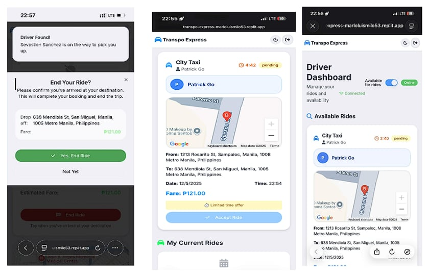
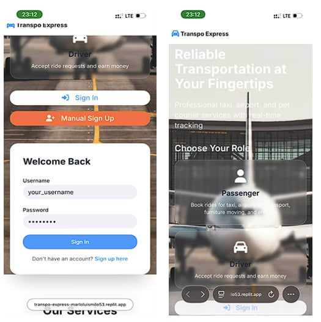

Project Detail
Transpo Express: Ridesharing Application

Overview
Transpo Express is a digital ridesharing platform created to address urban commuting challenges and streamline transport access for campus and local communities. The application addresses inefficient transport coordination by providing a centralized, accessible digital dispatch and booking environment, significantly reducing travel friction and improving transit visibility.
Project Highlights
Screenshots

